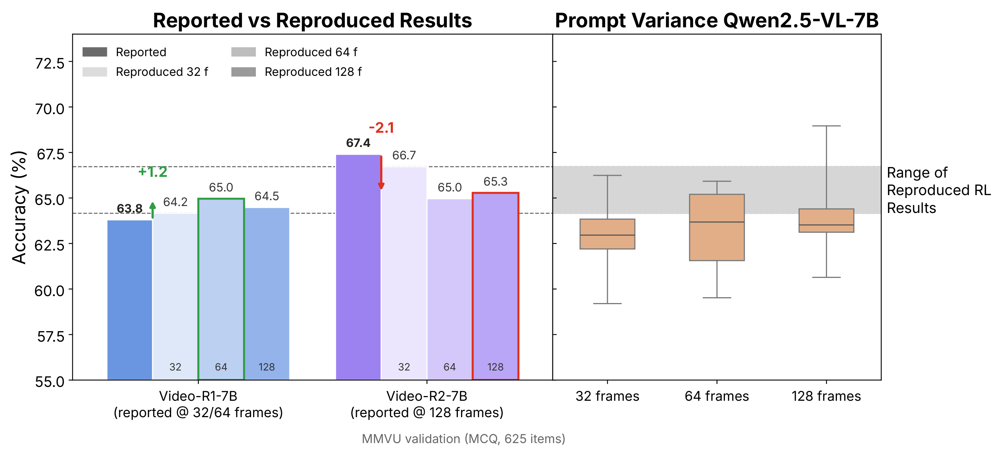

Evaluation framework. Nine parameters of the evaluation pipeline that change the reported accuracy of a video understanding model. Bold values mark the reference configuration used throughout.
Video understanding benchmarks are the primary yardstick for measuring progress in video-language modeling, and a growing body of work relies on them to claim improvements. The reported benchmark scores in these works, however, are almost always produced by frameworks (e.g., lmms_eval) used as black boxes: certain evaluation choices like frame sampling, preprocessing, and input formatting are inherited from preset defaults and seldom inspected carefully.
We show these unexamined choices are a major source of variance. Even for the same model checkpoint, evaluation configuration alone can shift accuracy by up to 19.5pp.
Hence, it is unclear whether reported gains reflect genuine improvements in capability or differences in evaluation setup. Moreover, many benchmark samples offer little evidence of visual capability, since they can be answered without the video, and the full suites are expensive to evaluate.
We address these issues in two parts. First, we curate existing suites for discriminability and efficiency, producing Meta-Video, a balanced 1,000-question benchmark over 791 videos spanning diverse tasks and durations, which largely preserves model rankings, at 5× inference speedup for a full frame-count sweep (4–128 frames).
Second, we establish a standardized evaluation protocol by sweeping the configuration space to isolate choices that measurably affect results, distill them into best practices and reporting standards, and release reproducible reference scores across five models and seven benchmarks.
We hope that the proposed evaluation framework and the Meta-Video benchmark will support video understanding research by providing a reproducible and efficient foundation to measure progress in a reliable way.
Performance reported for the Qwen2.5-VL-7B and Qwen3-VL-8B backbones across general video understanding and video reasoning benchmarks, as collected from the original model reports and from recent papers that build on these checkpoints. Subscripts give the difference to the score in the model report; Max Δ is the range of reported scores per benchmark, which reaches 19.5pp despite identical model weights. Ours (reproduced) is our re-evaluation under one fixed protocol at 128 frames. – = not reported.
| General Video Understanding | Video Reasoning | |||||||||||
|---|---|---|---|---|---|---|---|---|---|---|---|---|
| Model | VideoMME | TempCompass | MVBench | LongVideoBench | LVBench | VideoMMMU | MMVUmcq | MMVUval | VSIBench | SciVideoBench | VideoMathQA | Minerva |
| Base model: Qwen2.5-VL-7B | ||||||||||||
| Qwen2.5-VL-7B report | 65.1 | 71.7 | 69.6 | 56.0 | 45.3 | 47.4 | – | 50.1 | – | – | – | – |
| VideoRFT | 52.8−12.3 | 69.2−2.5 | 59.4−10.2 | 56.0 | 45.3 | 47.4 | 61.3 | – | 31.8 | – | – | – |
| Videochat-R1.5 | 64.4−0.7 | – | 67.4−2.2 | – | – | 46.7−0.7 | – | – | – | – | – | – |
| Open-o3-video | 62.4−2.7 | – | – | – | – | 51.2+3.8 | – | – | – | – | – | – |
| Video-R2 | 66.1+1.0 | 74.2+2.5 | 68.1−1.5 | 61.3+5.3 | – | 50.3+2.9 | 67.4 | – | 37.7 | 16.4 | 26.7 | 35.3 |
| Viss-R1 | 56.6−8.5 | 72.6+0.9 | 59.0−10.6 | – | – | 48.1+0.7 | 60.0 | – | 30.1 | – | – | – |
| Rethinking CoT | 55.5−9.6 | – | 63.2−6.4 | 52.5−3.5 | 34.2−11.1 | – | 63.4 | – | – | – | – | – |
| STORM | 55.4−9.7 | 69.9−1.8 | 60.5−9.1 | – | – | – | – | – | – | – | – | – |
| CoVER | 63.1−2.0 | – | – | 56.0 | 42.0−3.3 | – | – | – | – | – | – | – |
| Video-VER | 59.2−5.9 | 73.7+2.0 | 63.6−6.0 | – | – | 47.3−0.1 | 64.2 | – | 32.3 | – | – | – |
| Video-TwG | 46.6−18.5 | – | – | – | – | 44.4−3.0 | – | – | – | – | – | – |
| SDRL | 56.5−8.6 | 72.5+0.8 | 63.3−6.3 | – | – | 48.4+1.0 | 65.4 | – | 29.1 | – | – | – |
| Video-ToC | 59.6−5.5 | 72.9+1.2 | 59.2−10.4 | – | – | 50.4+3.0 | 60.0 | – | 31.4 | – | – | – |
| VidBridge-R1 | 59.4−5.7 | – | 58.7−10.9 | 50.6−5.4 | – | – | – | – | – | – | – | – |
| TW-GRPO | 56.5−8.6 | 72.5+0.8 | 63.3−6.3 | – | – | – | 65.4 | – | – | – | – | – |
| VideoAuto-R1 | 66.0+0.9 | – | 67.1−2.5 | 60.9+4.9 | – | 52.7+5.3 | – | – | – | – | – | – |
| MOSS-ChatV | 59.7−5.4 | 72.2+0.5 | 67.1−2.5 | – | – | 48.1+0.7 | – | – | – | – | – | – |
| STRIVE | 57.8−7.3 | 72.8+1.1 | – | – | – | 48.6+1.2 | – | – | 34.3 | – | – | – |
| RLER | 65.1 | 69.2−2.5 | 67.5−2.1 | 56.0 | 42.0−3.3 | 47.4 | – | – | 37.4 | – | – | – |
| VideoKR | 65.1 | – | 66.3−3.3 | 60.9+4.9 | – | 51.1+3.7 | – | 55.7 | – | 28.1 | – | – |
| AdaThinkV | 66.0+0.9 | – | 67.1−2.5 | 60.9+4.9 | – | 54.7+7.3 | 66.2 | – | – | 27.9 | 29.8 | – |
| Max Δ | 19.5 | 5.0 | 10.9 | 10.7 | 11.1 | 10.3 | 7.4 | 5.6 | 8.6 | 11.7 | 3.1 | 0.0 |
| Ours (reproduced, 128 f) | 65.6+0.5 | 73.4+1.7 | 68.0−1.6 | 60.2+4.2 | 42.1−3.2 | 38.8−8.6 | 64.6 | 51.9+1.8 | 38.3 | 27.9 | 26.9 | 35.3 |
| Base model: Qwen3-VL-8B-Instruct | ||||||||||||
| Qwen3-VL-8B-Instruct report | 71.4 | – | 68.7 | – | 58.0 | 65.3 | – | 58.7 | – | – | – | – |
| LLaVA-OneVision-2 | 71.4 | 74.3 | 69.0+0.3 | 68.0 | 58.0 | – | – | – | – | – | – | – |
| VSeek | 63.7−7.7 | – | – | 54.5 | 38.7−19.3 | – | – | – | – | – | – | – |
| OneThinker | 63.3−8.1 | – | – | 61.7 | – | 63.3−2.0 | – | – | – | – | – | – |
| VideoKR | 68.2−3.2 | – | 67.9−0.8 | 61.6 | – | 61.8−3.5 | – | 59.6 | – | 33.4 | – | – |
| InternVideo3 | 71.4 | – | – | 62.4 | 58.0 | – | – | – | – | – | – | – |
| AdaThinkV | 72.5+1.1 | – | 69.4+0.7 | 67.6 | – | 61.0−4.3 | 69.9 | – | – | 33.1 | 30.7 | – |
| Max Δ | 9.2 | – | 1.5 | 13.5 | 19.3 | 4.3 | – | 0.9 | – | 0.3 | – | – |
| Ours (reproduced, 128 f) | 69.2−2.2 | 74.2 | 69.2+0.5 | 63.6 | 46.5−11.5 | 56.6−8.7 | 69.1 | 58.7 | 59.7 | 34.5 | 31.6 | 36.0 |

Reported vs. reproduced MMVU accuracy. Left: paper-reported scores (dark) vs. our reproductions at 32, 64 and 128 frames (light) for Video-R1-7B and Video-R2-7B on the MMVU validation split (MCQ, 625 items). Right: prompt sensitivity of Qwen2.5-VL-7B across six prompts at 32, 64 and 128 frames; the shaded band is the range of reproduced RL results, which falls within the base model's prompt variance.
Sensitivity of Qwen2.5-VL-7B to every evaluation setting, in one chart per benchmark: x is what a setting costs, y is what it scores. Every run of Table 2 of the paper is re-expressed on a shared compute axis, the measured seconds per question relative to the reference run (1×, black star; log scale), so moving right always means spending more. Each colored line is one swept parameter; thick lines are the resource knobs (frames, input modality), thin lines the implementation and decoding knobs. The reference configuration is HF backend, batch size 1, 4 uniformly sampled frames, torchcodec, 602k max pixels, .mp4 input, temperature 0 and the official lmms_eval prompt (dashed line). Hover a line, a point or a legend entry to isolate it and read the exact accuracy, the standard deviation over repeated runs where the paper reports one, the cost multiplier and the total runtime of that sweep; the red star marks the best setting for the benchmark. Avg. is the mean accuracy over Video-MME, TempCompass, MVBench and LongVideoBench, with the geometric mean of their cost multipliers.
Video models are highly sensitive to evaluation choices, yet those choices are rarely reported in full. Inspired by dataset cards, an evaluation card summarizes the complete configuration behind a table of numbers in one place. Options in bold are the ones used; a set {·} denotes a parameter sweep with one run per value. We provide a card for every table in the paper and recommend attaching one to any new video benchmark result. The card below is the one for the standardized comparison of five open models (Table 4 of the paper).
| Scope | Models | InternVL3.5-4B, Qwen3-VL-4B, Qwen2.5-VL-7B, InternVL3.5-8B, Qwen3-VL-8B |
|---|---|---|
| Datasets | Video-MME, LongVideoBench, TempCompass, MMVU (val), LVBench, VSI-Bench, MLVU, Meta-V (short / medium / long) | |
| Runtime | Inference backend | HF | vLLM |
| Batch size | per no. of frames: 4 → 16, 8 → 8, 16 → 4, 32 → 4, 64 → 2, 128 → 1 | |
| Input | Input modality | .mp4 | .jpg frames |
| No. of frames | {4, 8, 16, 32, 64, 128} | |
| Frame sampling | uniform | fps rate | |
| Max frames | none | int | |
| Cap mode | none | uniform | cutoff | |
| Decoding | Video decoder | torchcodec | decord | torchvision |
| Frame resolution | 602,112 (max pixel count) | |
| Temperature | 0.0 | |
| Prompt layout | vt | tvt | vtv | |
| Prompt(s) | Dataset default prompts (one line per dataset in the paper's card) | |
| Comments | Protocol | One fixed protocol for all models; only the frame budget varies, all other settings are held fixed. |
| Reported rows | Shaded "reported" rows are copied from the original papers, not re-run; – = not reported or not evaluated. | |
| Aggregates | Avg. = mean over the seven benchmarks (excl. Meta-V); Meta-V = unweighted mean of short, medium and long. |
The blank template is tables/eval_card_template.tex in the paper sources: one self-contained LaTeX file to \input next to any results table.
Meta-Video is a compact benchmark of 1,000 question-answer pairs over 791 videos, drawn from the evaluation sets of Video-MME, LongVideoBench, LVBench, VideoMMMU and VSI-Bench, and balanced across sources, video durations (up to one hour) and question categories. Questions that models answer correctly even when every frame is replaced by a black frame are removed, so every remaining item requires the video. The result follows the trend of the full benchmark suite while costing about 5× less to evaluate, which makes it a practical first stop for comparing new models across frame budgets.

Source benchmarks and their categories.

Question types within each source benchmark.

Distribution of correct answer letters per benchmark.

Video duration distribution on Meta-Video.
Every node is one question-answer pair of Meta-Video, colored by its source benchmark; questions on the same video are linked and sit closest together. Hover a node for a frame-by-frame preview of its video with the question, its options and the correct answer; click a node to pin the card and stream the full video; drag nodes around, and click a legend entry to hide or show a source.
lmms_eval_video is a fork of lmms-eval in which every setting that changes what a video model sees lives in one YAML file: dataset, model, frames and how they are sampled, decoder, resolution, backend (HF, vLLM, or vLLM with the video fix), batch size, decoding. The runner refuses settings a model wrapper would silently ignore and writes an evaluation card next to every result.
git clone https://github.com/soumyasj/lmms_eval_video
cd lmms_eval_video && pip install -e .
# Meta-Video, Qwen2.5-VL-7B, 32 frames, HF backend (configs/example.yaml holds every key with its default)
python eval_scripts/run_eval.py configs/example.yaml
python eval_scripts/run_eval.py configs/example.yaml --dry_run # resolved settings + the final lmms_eval command, runs nothing
python eval_scripts/run_eval.py configs/example.yaml --set model=qwen3vl_8b --set nframes=64
# the paper's standardized comparison: five models x 4..128 frames on Meta-Video
python eval_scripts/run_eval.py configs/metav_protocol.yaml
python eval_scripts/score_metav.py --write logs/runs/metav_protocol/metav/*/*/*/*_results.jsonA config toggles tasks, model, nframes, backend and vllm_fix as lists and fixes everything else; the first Meta-Video run downloads the dataset (questions and videos) from Hugging Face. The repository's DATASETS.md and MODELS.md document every video task (dataset version, split, prompt, metric) and every model family (arguments, how frames become tokens, backends).
The code follows the lmms-eval license. The Meta-Video item lists and prompts are released under CC BY 4.0: http://creativecommons.org/licenses/by/4.0
Note: The videos belong to the source benchmarks (Video-MME, LongVideoBench, LVBench, VideoMMMU, VSI-Bench) and are subject to their own licensing terms. Please ensure compliance with the original dataset licenses.
@article{jahagirdar2026metavideo,
title={Meta-Video: Efficient Standardized Evaluation for Video Understanding},
author={Jahagirdar, Soumya Shamarao and Kukleva, Anna and Udandarao, Vishaal and Thomas, Samuel and Kingsbury, Brian and Feris, Rogerio and Glass, James R. and Prabhu, Ameya and Kuehne, Hilde},
journal={arXiv preprint arXiv:2610.18535},
year={2026}
}